Apuntes para la oposición al Cuerpo de Diplomados Comerciales del Estado
14 Economía del bienestar (I). Óptimo económico y equilibrio general competitivo. Los teoremas fundamentales del bienestar. Teoría del “second best”.
14.1 Introducción  1'
1'
La Economía del bienestar es la rama de la teoría económica que intenta valorar, desde un punto de vista colectivo, las distintas situaciones en las que puede encontrarse un sistema económico. Estudia la deseabilidad social de los estados económicos alternativos a través de distintos criterios de valoración.
Las funciones de la Economía del Bienestar son1:
Función positiva o descriptiva, proporcionar instrumentos para valorar la deseabilidad social de los estados alternativos, caracterizados por una asignación de recursos y una distribución de la renta. A priori, valorar estos estados implica hacer juicios de valor.
Función normativa o prescriptiva, proporciona criterios de decisión para maximizar el bienestar social (política económica).
El criterio fundamental que ha surgido en el campo de la Economía del Bienestar para valorar el bienestar social es el de eficiencia económica, entendida como el mejor uso posible de los recursos limitados: un sistema económico es eficiente si no desperdicia recursos, es decir, si no es posible aumentar el bienestar de un individuo sin reducir el de otro.
Existen varios enfoques para valorar la eficiencia económica, siendo el más aceptado el de Vilfredo Pareto cuya importancia radica en que.
Se basa en pocos juicios de valor.
Dichos juicios de valor son débiles, por lo que son generalmente aceptados.
Permite valorar el sistema competitivo como mecanismo de asignación de los recursos de la economía.
No obstante, dadas las limitaciones de este enfoque surgieron nuevas aportaciones posteriores como
Nueva Economía del Bienestar, desarrollada en los años 30 y 40 de la mano de Kaldor, Hicks, Scitovsky y Little, que tratan de superar la indeterminación paretiana mediante los criterios de compensación (vía neoparetiana) y el criterio de la función de bienestar social (vía neoutilitarista).
Novísima Economía del Bienestar, en los años 50 y 60 por parte de Arrow, Nash, Lipsey y Lancaster, con la Teoría del Second Best o la Teoría de elección colectiva.
Por consiguiente, el objetivo del tema será analizar los criterios de ordenación más importantes desde el punto de vista de la eficiencia a través del siguiente esquema2:
Óptimo económico.
Equilibrio competitivo y teoremas del bienestar.
Los criterios de compensación.
Teoría del Second Best.
14.2 Óptimo Económico 10'
En su obra Manual de Política Económica (1906) Pareto establece un criterio de ordenación basado en la “superioridad”. Para ello incorpora una serie de juicios de valor que suelen ser generalmente aceptados3:
Individualismo, las variables que afectan al bienestar social son las utilidades individuales. El bienestar social depende del bienestar individual, considerando que el bienestar puede aumentar con el consumo
Unanimidad, establece el principio de superioridad. El bienestar no es comparable. Solo cambios unánimemente aceptados mejoran el bienestar.
Independencia del proceso, no importan los mecanismo utilizados para asignar los recursos y distribuir la renta. Concretamente, no importa si una situación es fruto de la acción libre o de decisiones forzadas.
Discutible, la democracia es preferible a una dictadura.No paternalismo, las funciones de utilidad de referencia son las individuales, pues se considera que el individuo es el mejor juez de su propio bienestar.
Discutible, por ejemplo ante el consumo de bienes de consumo no socialmente aceptados como pueden ser las drogas o el porno.Benevolencia, en el sentido de que un incremento en la utilidad de cualquier individuo, ceteris paribus, se considera una mejora en el bienestar. Esto implica que el criterio de Pareto no emite juicios de valor sobre las desigualdades.
Discutible, no tienen en cuenta una potencial distribución equitativa de la renta, por ende cuestiones como la pobreza o la justicia social.
A partir de estos juicios de valor, Pareto establece dos conceptos cruciales:
Criterio de bienestar social: una asignación \(x\) es preferida a otra \(y\) si, en el paso de \(y\) a \(x\), algún individuo mejora y ninguno empeora. En este caso, \(x\) es Pareto superior a \(y\)4. No obstante, que una asignación sea Pareto superior a otra no significa que la primera sea un óptimo de Pareto.
Pareto óptimo: o criterio de óptimo económico. Una asignación es Pareto óptimo si no es posible reasignar recursos de manera que algún individuo mejore sin que otro empeore. Es decir, no existe ninguna asignación Pareto superior al mismo.
Con el fin de estudiar cómo llega el mercado al óptimo de Pareto y a las condiciones de óptimo económico, se utilizará un modelo estático 2x2x2 con los siguientes 7 supuestos:
Existen 2 factores de producción, capital \(K\) y trabajo \(L\), cuya oferta total está dada (exógena) y que son perfectamente divisibles y homogéneos.
Existen 2 bienes , \(X\) e \(Y\), con características de bienes privados5, que se producen a partir de \(K\) y \(L\) mediante una función de producción \(F\left(K,L\right)\) neoclásica y rendimientos no crecientes a escala6.
Existen 2 consumidores \(A\) y \(B\), cuyas preferencias vienen representadas por las funciones de utilidad \(U_{A}=U_{A}\left(X_{A},Y_{A}\right)\) y \(U_{B}=U_{B}\left(X_{B},Y_{B}\right)\). Las preferencias son convexas, es decir, las funciones de utilidad son cuasicóncavas, de modo que los consumidores muestran gusto por la variedad7.
Inexistencia de efectos externos tanto en la producción como en el consumo8.
Inexistencia de bienes públicos9.
Los consumidores y los productores son racionales, es decir, que desean maximizar sus funciones objetivo –utilidad y beneficios respectivamente–.
Modelo cerrado, es decir, la renta se agota y hay plena ocupación.
Una vez planteados los supuestos, para que una asignación de recursos sea un óptimo de Pareto es necesario que la asignación sea simultáneamente óptima en la producción, óptima en el consumo –o intercambio– y óptima globalmente.
Óptimo en la producción
Una asignación es óptima/eficiente en la producción si, mediante la reasignación de factores de producción entre industrias, no es posible producir una mayor cantidad de un bien sin reducir la producción del otro. Es decir, implica una asignación óptima de los factores entre las empresas.
Para obtener un óptimo en producción se plantea un problema de maximización de la cantidad del bien \(X\), que utilizará una determinada cantidad de factor capital, \(K_{X}\), y trabajo, \(L_{X}\)
\[\underset{K_{X},L_{X}}{\max}X\left(K_{X},L_{X}\right) \tag{14.1}\] sujeto a una cantidad dada del bien \(Y\), \(\bar{Y}\), y a las cantidades totales de factores, \(\bar{K}\) y \(\bar{L}\), utilizadas en la producción de ambos bienes \[\begin{aligned} \bar{Y} & =Y\left(K_{Y},L_{Y}\right)\\ \bar{K} & =K_{X}+K_{Y}\\ \bar{L} & =L_{X}+L_{Y} \end{aligned} \tag{14.2}\]
La condición de primer orden, CPO, establece que la relación marginal de sustitución técnica, \(RMST\), entre dos factores de producción debe igualarse entre industrias \[RMST^{X}_{K,L}=RMST^{Y}_{K,L} \tag{14.3}\]
es decir, deberán igualarse las tasas a las que se intercambian factores manteniendo constante el nivel de producción, definidas como el cociente entre las productividades marginales de los factores \[RMST^{X}_{K,L}=\left.-\dfrac{dL_{X}}{dK_{X}}\right|_{\bar{X}}=\dfrac{PMg^{X}_{K}}{PMg^{X}_{L}} \tag{14.4}\]
Gráficamente, el óptimo de Pareto en la producción se puede representar mediante la caja de Edgeworth10 cuyas dimensiones vienen determinadas por las dotaciones de capital y trabajo como se observa en la Figura 14.1.
A partir de las curvas isocuantas, que muestran las combinaciones de factores productivos que permiten alcanzar el mismo nivel de producción y cuya pendiente es la \(RMST\), se puede hallar la producción óptima que se dará en los puntos de tangencia de las mismas, donde las \(RMST\) de ambos bienes se igualan.
De esta forma, se obtiene la curva de contrato, definida como el lugar geométrico de las combinaciones de capital y trabajo que determinan un óptimo en la producción11.
El conjunto de asignaciones de la curva de contrato no serán comparables entre sí en el sentido de eficiencia de Pareto, dado que todas son óptimas. Además, no todas las tangencias se producen necesariamente en la misma pendiente, es decir, la curva de contrato no es necesariamente una isoclina.
Así:
Si se parte de un punto como 1, sería posible reasignar los factores productivos y aumentar la producción de un bien manteniendo constante la del otro en los puntos 2 y 3, o bien aumentar la producción de ambos bienes en cualquiera de los puntos dentro de la lente –la región formada por las isocuantas que pasan por la dotación inicial 1– sobre la curva de contrato.
De esta forma, por analogía con el intercambio entre consumidores, se puede definir el núcleo como el conjunto de asignaciones eficientes que ningún agente rechazaría frente a la asignación inicial 1, es decir, el tramo de la curva de contrato situado dentro de la lente. Por lo tanto, si una asignación pertenece al núcleo, se han agotado todas las ganancias del intercambio y nadie queda peor que en su situación de partida12.
Por lo tanto, para que una asignación pueda considerarse núcleo de la economía es necesario que cumpla:
Estar dentro de la caja, es decir, que sea alcanzable.
Estar dentro de la lente, es decir, que ningún agente quede peor que en la asignación inicial (en la caja de producción, que ninguna industria reduzca su producción).
Estar sobre la curva de contrato, es decir, que sea Pareto eficiente.
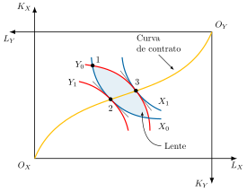
La Frontera de Posibilidades de Producción, \(FPP\), es la curva que muestra la máxima cantidad de \(Y\) que puede producirse para cada cantidad de \(X\), dados los factores disponibles y la tecnología. Se obtiene trasladando la curva de contrato al plano de bienes, \(X\) e \(Y\), como en la Figura 14.2, pues cada asignación eficiente de \(K\) y \(L\) da lugar a una combinación de producciones13. En cualquier punto de la curva todos los factores están empleados de forma eficiente.
Posee las siguientes propiedades:
Pendiente negativa, porque las funciones de producción son crecientes.
Concavidad, porque, a medida que se trasladan factores de un bien a otro, cada unidad adicional de un bien exige renunciar a cantidades crecientes del otro, de modo que la \(RMT\) aumenta a lo largo de la frontera14.
Su pendiente es la relación marginal de transformación, \(RMT\), que mide la cantidad de \(Y\) a la que hay que renunciar para producir una unidad más de \(X\), es decir, el coste de oportunidad de \(X\) en términos de \(Y\)15 \[RMT_{X,Y}=-\frac{dY}{dX} \tag{14.5}\]
Todos los puntos de la \(FPP\) son eficientes en la producción, por lo que:
Existen infinitos óptimos en la producción.
Los puntos interiores a la FPP son ineficientes, y los puntos situados fuera son inalcanzables, a menos que se descubran recursos adicionales y/o una nueva tecnología.
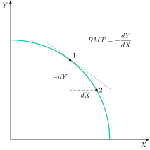
Óptimo en el consumo
Una vez alcanzado el óptimo en producción y ante la existencia de infinitos óptimos, se analizarán los óptimos en el consumo, es decir, aquellas asignaciones en las que no sea posible a través de una redistribución de los bienes aumentar la utilidad de un consumidor sin disminuir la del otro, por lo que serán eficientes. Por lo tanto, implica una distribución óptima de los bienes distribuidos entre los consumidores.
Para obtener un óptimo en consumo se plantea un problema de maximización de la utilidad del individuo \(A\), que le reporta el consumo del bien \(X\) y del bien \(Y\)
\[\underset{X_{A},Y_{A}}{\max}u_{A}\left(X_{A},Y_{A}\right) \tag{14.6}\] sujeto a una utilidad dada del individuo \(B\) , \(\bar{u}_{B}\), y a las cantidades totales consumidas ambos bienes por ambos individuos \[\begin{aligned} \bar{u}_{B} & =u_{B}\left(X_{B},Y_{B}\right)\\ \bar{X} & =X_{A}+X_{B}\\ \bar{Y} & =Y_{A}+Y_{B} \end{aligned} \tag{14.7}\]
La condición de primer orden, CPO, establece que la relación marginal de sustitución de \(A\) deberá igualarse a la del individuo \(B\) \[RMS^{A}_{X,Y}=RMS{}^{B}_{X,Y} \tag{14.8}\]
es decir, la cantidad de \(Y\) a la que cada individuo está dispuesto a renunciar a cambio de una unidad más de \(X\), manteniendo constante su utilidad, debe ser la misma para ambos, y cada una es igual al cociente entre las utilidades marginales de los bienes \[RMS^{A}_{X,Y}=\left.-\dfrac{dY}{dX}\right|_{\bar{u}_{A}}=\dfrac{UMg^{A}_{X}}{UMg^{A}_{Y}} \tag{14.9}\]
Gráficamente, el problema se puede representar a través de una caja de Edgeworth como la de la Figura 14.3 cuyas dimensiones ahora vendrán determinadas por las cantidades consumidas por los individuos \(A\) y \(B\) tanto del bien \(X\) como del bien \(Y\).
A su vez, se podrán representar las curvas de indiferencia, que indican las combinaciones de bienes \(X\) e \(Y\) que proporcionan el mismo nivel de utilidad y cuya pendiente, en valor absoluto, es la Relación Marginal de Sustitución16, \(RMS\). Los puntos óptimos de consumo17 vendrán representados por los puntos de tangencia de las curvas de indiferencia para el consumo del individuo \(A\) y el individuo \(B\). A partir de la unión de todos los puntos óptimos en el consumo se podrá representar la curva de contrato.
A partir de las curvas de indiferencia, que indican las combinaciones de bienes \(X\) e \(Y\) que representan el mismo nivel de utilidad y cuya pendiente es la \(RMS\), se puede hallar el consumo óptimo que se dará en los puntos de tangencia de las mismas, donde las \(RMS\) de ambos consumidores se igualan. De esta forma, se obtiene la curva de contrato, definida como el lugar geométrico de las combinaciones de bien \(X\) y bien \(Y\) que determinan un óptimo en el consumo.
De la misma forma que en el análisis de producción, el conjunto de asignaciones de la curva de contrato no serán comparables entre sí en el sentido de eficiencia de Pareto, dado que todas son óptimas. Además, no todas las tangencias se producen necesariamente en la misma pendiente, es decir, la curva de contrato no es necesariamente una isoclina.
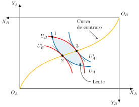
Además, si se representa la curva de contrato en el espacio de las utilidades de los agentes como en la Figura 14.4, se podrá obtener la Frontera de Posibilidades de Utilidad, \(FPU\), que recoge los puntos de utilidad óptimos, es decir, aquellos en los que no es posible aumentar la utilidad de \(B\) sin disminuir la utilidad de \(A\). Además, posee las siguientes propiedades
Pendiente negativa, ya que las funciones de utilidad son crecientes y porque no existen externalidades derivadas del consumo.
No va a tener una forma concreta ya que se basa en una ordenación ordinal, las funciones de utilidad no tienen necesariamente una forma cóncava porque las funciones de utilidad no son estrictamente cóncavas, sino cuasicóncavas.
Todos sus puntos son eficientes en el consumo, por lo que
Existen infinitos óptimos en el consumo
Los puntos interiores de la \(FPU\) son ineficientes mientras que los situados fuera son inalcanzables
Para cada óptimo en producción va a existir una \(FPU\), por lo que, al existir infinitos óptimos de producción, existirán infinitas \(FPU\)s.
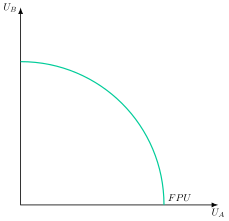
Óptimo global
Por último, para que una asignación sea un óptimo económico debe ser un óptimo global, es decir, una asignación eficiente en la producción y en el consumo en la que, además, la valoración relativa de los bienes por los consumidores coincide con su coste de oportunidad en la producción. De esta forma:
Para ello, se añadirá al problema de maximización de consumo ( 14.6) una restricción adicional, que implica que \(Y\) es una función de \(X\), de modo que la producción esté sobre la \(FPP\), es decir, se garantiza que se alcanza un óptimo en la producción. \[\bar{Y}=f\left(X\right) \tag{14.10}\]
Las CPO del problema establecerán que la relación marginal de sustitución de ambos individuos debe coincidir con la relación marginal de transformación, \(RMT\), en la producción de los bienes18 \[RMS^{A}=RMS^{B}=RMT \tag{14.11}\] es decir, la valoración relativa de los bienes en el consumo debe coincidir con la valoración relativa en producción19.
Por lo tanto, la eficiencia en la producción y en el consumo es una condición necesaria pero no suficiente para alcanzar un óptimo global, pues además debe cumplirse la igualdad entre las \(RMS\) y la \(RMT\)20.
Gráficamente, se introducirá una caja de Edgeworth en una \(FPP\), como se observa en la Figura 14.5. Sobre la \(FPP\), el punto \(E\) supone una producción de \(X\) e \(Y\), \(X^{*}\)e \(Y^{*}\), que determina las dimensiones de la caja de Edgeworth. Por tanto:
Todos los puntos de las líneas de contrato son eficientes en el sentido de Pareto y, dado que dichas dotaciones de bienes se han producido también eficientemente –es decir, producción en la \(FPP\)–, se puede decir que se trata de asignaciones todas ellas eficientes tanto en consumo como en producción.
Sin embargo, no todas son eficientes desde un punto de vista global. Será un óptimo de Pareto global aquel reparto de los bienes producidos donde se igualen las \(RMS\) de ambos consumidores entre sí e iguales a la \(RMT\). Así, no todas las tangencias de las curvas de indiferencia situadas en la línea de contrato se producen con la misma pendiente, por lo que no todas ellas deben coincidir con la de la \(FPP\). Ese punto –o puntos– será el óptimo global para esa producción, siendo en el gráfico el punto \(D\), donde, para la producción del punto \(E\), se cumple \(RMS_{A}=RMS_{B}=RMT\).
De esta forma, para otras producciones eficientes, como podría ser el punto \(E^{\prime}\), se podría obtener otra caja de Edgeworth para el consumo, con otro óptimo global –o con varios o con ninguno–. Por lo tanto, puede haber infinitos óptimos globales que no serían comparables, por lo que no sería posible determinar cuál es el estado económico en el que la economía debe situarse, dándose una indeterminación.
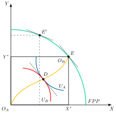
Por otro lado, los diferentes óptimos globales se pueden recoger en la Gran Frontera de Posibilidades de Utilidad, \(GFPU\), que gráficamente, en un plano de utilidad de los individuos \(A\) y \(B\) como el de la Figura 14.6 se define como la envolvente de los puntos de las fronteras de posibilidades de utilidad que se corresponden con óptimos globales.
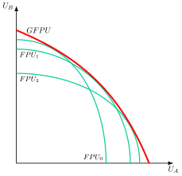
No obstante, al existir infinitos óptimos no comparables, el criterio de Pareto puede no ser suficiente para determinar qué asignación maximiza el bienestar social, que es el objetivo último de la Economía del Bienestar. Así, la eficiencia u optimalidad paretiana global es una condición necesaria pero no suficiente para garantizar la maximización del bienestar social.
14.3 Equilibrio competitivo y Teoremas del Bienestar 3'
Para determinar qué óptimo de Pareto maximiza el bienestar social (el óptimo optimorum), es necesario algún criterio adicional. En este sentido, surgió durante los años 30 y 40 una nueva línea de pensamiento, la Nueva Economía del Bienestar, que trató de superar esta indefinición a través de 2 vías:
Línea neoutilitarista, que introduce el criterio de la función de bienestar social. Bergson desarrolló una función capaz de evaluar sin ambigüedad los estados alternativos de la economía. Ésta permitiría encontrar el punto de máxima felicidad. Es decir, aquel punto tangente a la GFPU que maximiza el bienestar social (ser óptimo global será condición necesaria pero no suficiente). Este punto será meramente tecnocrático: es independiente de los precios o del sistema económico con el que se alcance.
Línea neoparetiana, que introduce los criterios de compensación basados en el principio de “compensación potencial”: una situación económica será preferible siempre que los individuos que mejoran puedan indemnizar a los perjudicados.
Respecto a la primera vía, Bergson (1938) elaboró una función de bienestar social capaz de valorar sin ambigüedad los estados alternativos de la economía. Gráficamente, en un plano de utilidades de \(A\) y \(B\) como el de la Figura 14.7, se representa la \(GFPU\) junto con dos curvas de indiferencia social, \(CIS_{0}\) y \(CIS_{1}\), cada una de las cuales une las combinaciones de utilidades de \(A\) y \(B\) a las que la función de bienestar social asigna el mismo nivel de bienestar21.
Por ejemplo, un cambio que desplazara a la sociedad desde un punto \(A\) hacia un punto \(C\) aumentaría el bienestar de la sociedad ya que se encontraría sobre una curva de indiferencia social más alejada del origen. El punto máximo de bienestar social se alcanzará en el punto de tangencia entre la \(GFPU\) y la curva de indiferencia social más alejada del origen. Este punto \(C\) se denomina “punto de felicidad”. El problema de la función de bienestar social es que no cuenta con un método para construirla, por lo que se presume su existencia de forma axiomática22.
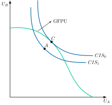
No obstante, dicho punto de felicidad es puramente tecnocrático, es decir, se alcanza por las formas funcionales supuestas, que permiten la igualación de las valoraciones de distintos agentes –\(RMS=RMT\)– con la igualación social –pendiente de la curva de indiferencia social–, con independencia de los precios.
¿Existe algún sistema económico con el que se pueda alcanzar el óptimo global?
Sí, la competencia perfecta (Equilibrio General Competitivo). Se puede demostrar que la competencia perfecta conduce a una situación de equilibrio general que es óptima de Pareto global (aunque no necesariamente una situación que maximice el bienestar social23). Se basa en los siguientes supuestos:
Los mercados sean completos, es decir, todos los bienes se intercambian en el mercado a precios públicamente conocidos.
Información perfecta, no existan fallos de información.
Agentes precio-aceptantes.
Todas las acciones quedan determinadas por los precios.
Bajo estos supuestos, un equilibrio competitivo se define como un vector de precios y de asignaciones de bienes y factores tal que los agentes maximizan su utilidad –por el lado del consumo– y los beneficios –por el lado de la producción– y todos los mercados se vacían.
A partir de esta noción de equilibrio competitivo se formulan los 2 teoremas fundamentales de la Economía del Bienestar:
Primer Teorema de la Economía del Bienestar: en ausencia de fallos de mercado, todo equilibrio general competitivo es un óptimo de Pareto24.
Segundo Teorema de la Economía del Bienestar, cualquier asignación eficiente en sentido de Pareto puede alcanzarse como un equilibrio competitivo a través de la redistribución de las dotaciones iniciales. Este resultado exige que las preferencias de los consumidores y los conjuntos de producción de las empresas sean convexos –condiciones ya recogidas en los supuestos del modelo–, y que la redistribución se realice mediante transferencias de suma fija que no distorsionen las decisiones de los agentes.
Por un lado, una consecuencia directa del segundo teorema del bienestar es que el sector público podría llevar a cabo transferencias de suma fija y dejar posteriormente trabajar a los mecanismos de mercado para alcanzar un óptimo de Pareto global que maximiza el bienestar social25.
A su vez, el segundo teorema implica que es posible separar las dimensiones de equidad y eficiencia, por lo que los defensores de la equidad utilizarán este resultado para defender que, aun en el caso de que no haya imperfecciones, el Estado debe intervenir para mejorar la equidad, sin que por ello se tenga que resentir la eficiencia.
Por otro lado, el primer teorema del bienestar sirve en defensa del libre mercado, limitando así el papel del Estado a la corrección de imperfecciones.
Valoración del criterio paretiano
En definitiva, el criterio de Pareto ofrece ciertas ventajas:
Proporciona un criterio de eficiencia económica.
Emplea un análisis generalmente aceptado, especialmente por el marginalismo.
Evita consideraciones distributivas y comparaciones interpersonales de utilidad.
Introduce juicios débiles y generalmente aceptados.
Formaliza las ventajas de la competencia perfecta como sistema de asignaciones.
Aún así presenta también una serie de problemas desde el punto de vista colectivo debido a
Existencia de infinitas soluciones.
No se pueden realizar comparaciones.
Independencia del proceso. Para el criterio de Pareto es igualmente válida, ceteris paribus, una decisión que haya sido adoptada democráticamente que otra que ha sido impuesta de manera dictatorial.
No tiene en cuenta la distribución, siendo la solución de esquina –un individuo consume todo y el otro nada– un óptimo en el consumo –pues para que el que no tiene nada mejore, el que tiene todo debe empeorar–26.
Tiranía de las minorías, como analiza Baumol (1952). El criterio de Pareto puede resultar inoperante para la política económica, ya que una nueva asignación puede ser vetada si tan solo un individuo la rechaza, lo que implica la unanimidad en las decisiones.
Supuestos muy restrictivos: los fallos de mercado son comunes.
No es capaz de ofrecer una ordenación completa entre los óptimos de Pareto ni determinar cuál es el que maximiza el bienestar.
Por este último motivo, se plantean a continuación dos aportaciones de la Nueva y la Novísima Economía del Bienestar:
Los criterios de compensación, que intentan romper con la indeterminación del criterio de Pareto y con la regla de la unanimidad –algo que también intentaba hacer la función de bienestar social analizada anteriormente–.
La teoría del second best, que trata de dar una respuesta a los casos en los que se producen imperfecciones en el mercado.
14.4 Los criterios de compensación2'30"
Para superar tanto la indeterminación como la restrictividad del criterio de Pareto surgen los criterios de compensación (Boadway y Bruce 1984). Concretamente, se busca un criterio que permita pronunciarse sobre la deseabilidad de cualquier combinación de situaciones económicas, permitiendo una ordenación completa de los estados económicos alternativos para encontrar aquella que maximice el bienestar social.
Para poder analizarlos, gráficamente en un plano de utilidad de \(A\) y \(B\) como el de la Figura 14.8, se representan 2 \(FPU\) con diferentes puntos: \(1\), \(2\), \(3\) y \(4\). A partir de los mismos se presentan los criterios de compensación:
Criterio de Kaldor (1939): una asignación será preferible a otra si los ganadores pueden compensar a los perdedores para que haya cambio y, aun así, seguir beneficiándose del cambio. En la Figura 14.8 (a), el paso de \(1\) a \(2\) no se puede determinar por el criterio de Pareto porque ambos no son comparables. Sin embargo, según el criterio de Kaldor deberá llevarse a cabo porque el ganador –consumidor A– puede compensar al consumidor B situándose en \(3\) y, aun así, estar mejor que en la situación inicial.
Criterio de Hicks (1939): una asignación será preferible a otra si los perdedores no pueden compensar a los ganadores para que no haya cambio y, aun así, beneficiarse de que no haya cambio. Dicho de otro modo: los perdedores podrían intentar “sobornar” a los ganadores, ofreciéndoles algo a cambio de que renuncien al cambio; el criterio de Hicks se cumple si ese soborno no les compensaría, es decir, si aun pagándolo y evitando el cambio, los perdedores seguirían estando peor que si el cambio se hubiera producido. A diferencia de Kaldor, cuyo ejemplo se ilustraba con el paso de \(1\) a \(2\), el criterio de Hicks se ilustra aquí con una transición distinta que resulta concluyente por sí sola –aplicar Hicks directamente a la transición de \(1\) a \(2\) ya adelantaría la inconsistencia entre criterios que se desarrollará más abajo con la paradoja de Scitovsky–. En la misma Figura 14.8 (a), el paso de \(3\) a \(4\) deberá llevarse a cabo porque el perdedor –consumidor B– no puede compensar al consumidor A situándose en \(2\) y estar mejor que si hubiese cambio.
Criterio de Scitovszky (1941): Scitovsky demostró que existirán casos donde el criterio de Kaldor o el de Hicks podrían entrar en contradicción con ellos mismos, dando lugar a la paradoja de Scitovsky. En la Figura 14.8 (a), según Kaldor es óptimo pasar de \(1\) a \(2\), pero una vez en \(2\) el criterio de Kaldor indica que es óptimo pasar de \(2\) a \(1\). Por lo tanto, bajo este criterio la economía estaría sometida a cambios cíclicos entre ambos estados.
Esta paradoja se produce porque entre las \(FPU\) que se comparan existe un punto de corte, es decir, ninguna domina completamente a la otra.
Para solucionarlo, Scitovsky propone un doble criterio, es decir, que se cumplan a la vez el criterio de Kaldor y el de Hicks. Así, un cambio será potencialmente Pareto superior si los ganadores pueden compensar potencialmente a los perdedores y aun así alcanzar un nivel de utilidad superior al nivel inicial y, a su vez, los perdedores no pueden compensar a los ganadores a cambio de que no se produzca el cambio y, a su vez, alcanzar un nivel de utilidad superior al percibido tras el cambio.
En la Figura 14.8 (b), la transición de \(1\) a \(2\) cumple dicho criterio ya que el ganador –consumidor B– puede compensar a A en \(3\). A su vez, A no puede compensar a B en \(4\).Criterio de Samuelson (1950): Samuelson soluciona la posible intransitividad que genera el criterio de Scitovsky. Como se observa en la Figura 14.8 (c), según Samuelson, una asignación \(2\) será preferible a una asignación \(1\) si la Frontera de Posibilidades de Utilidad correspondiente a \(2\) es completamente exterior a \(1\).
Se trata de un criterio muy exigente, porque solo permite pronunciarse cuando una frontera domina por completo a la otra, pero no es redundante con el de Pareto: los puntos concretos \(1\) y \(2\) pueden no ser comparables según Pareto y, aun así, la situación \(2\) es preferible, porque con una redistribución adecuada todos podrían estar mejor que en cualquier reparto posible de la situación \(1\)27.Criterio de Little (1950): Little se aparta del criterio paretiano y considera que hay que tener en cuenta aspectos redistributivos aunque ello suponga consideraciones de equidad. Este autor propone que se cumplan no solo los criterios de Kaldor y de Hicks, sino que, además, se produzca una mejoría en la distribución de la renta.
Como se observa en la Figura 14.8 (d), la aplicación simultánea de los criterios de Kaldor y de Hicks determina que tanto el punto \(2\) como el punto \(3\) sean preferibles al punto \(1\). En cambio, si se añade el requisito adicional de Little de que la distribución de la renta mejore, entonces el punto \(2\) seguirá siendo preferible a \(1\), pues se cumplen simultáneamente los criterios de Kaldor y de Hicks y, además, la distribución de la renta mejora pues está más cerca de la bisectriz –que reflejaría aquellos casos en que la distribución es totalmente igualitaria–. Sin embargo, el punto \(3\) ya no es preferible al \(1\) debido a que la distribución de la renta empeora.
Sin embargo, los criterios de compensación presentan un problema28: que suponen compensaciones potenciales, no efectivas, lo que conlleva implícita una comparación interpersonal de la utilidad (la ganancia de utilidad de los que mejoran es más deseable que la disminución de la utilidad de los que empeoran), algo que una función de utilidad ordinal29 como tal no permite30.
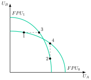
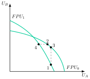
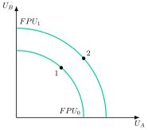
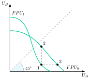
14.5 Teoría del Second Best 3'
Por último, ya dentro de la Novísima Economía del Bienestar, Lipsey y Lancaster (1956) formalizan la teoría del second best, según la cual, si una de las condiciones de óptimo de Pareto no puede cumplirse, cumplir las demás deja de ser necesariamente deseable.
Teoría tradicional
Cuando alguna de las condiciones de óptimo de Pareto no se cumplía, se creía deseable alcanzar el máximo número posible de condiciones de óptimo, pues con ello se creía que la economía se acercaría más al óptimo global. En términos de política económica esto tenía unas implicaciones muy claras: había que llevar a cabo medidas dirigidas a restaurar el máximo número posible de condiciones de óptimo.
Teoría del second best
Cuando no se cumple alguna de las condiciones de óptimo, entonces las otras condiciones de Pareto, aunque se puedan cumplir o alcanzar, no son necesariamente deseables. Por lo tanto, las condiciones de Pareto son deseables sólo si se cumplen todas de manera simultánea. Así:
El número de condiciones de óptimo que cumplan distintas situaciones en las que existen distorsiones no aporta información. Es decir, una situación que cumpla un mayor número de condiciones de óptimo no es necesariamente superior a otra que satisfaga un menor número de condiciones.
Cuando existan varias distorsiones, eliminar una de ellas puede afectar al bienestar de forma positiva, negativa o neutral.
En términos de política económica, esto significa que, en presencia de al menos una distorsión no evitable, el policymaker no estaría entonces obligado a eliminar el resto de distorsiones (y podría, incluso añadir alguna más).
Gráficamente, en un plano de utilidades como el de la Figura 14.9, se representa la \(GFPU\), donde todos los puntos son óptimos de Pareto31 (pues se cumplen las condiciones \(RMS^{A}=RMS^{B}=RMT\)), y diferentes curvas de indiferencia social con diferentes puntos, siendo el punto \(C\) el punto de felicidad –máximo bienestar social–.
Si se introduce una restricción, \(R\), en la economía tal que los puntos por encima de esa recta ya no son alcanzables –es decir, el punto \(C\) no es alcanzable–. En esta situación podríamos preguntarnos qué punto es ahora mejor, si \(A\) ó \(B\):
El punto \(B\) es un óptimo paretiano
El punto \(A\), por su parte, no es un óptimo, pero da lugar a un mayor nivel de bienestar social, por lo que esta asignación \(A\) será preferible socialmente a \(B\).
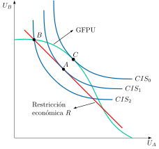
Esto demuestra que, ante la existencia de una restricción, será mejor, en este ejemplo, abandonar las condiciones de optimalidad que sí se cumplen, pues así se mejora el bienestar social.
Ejemplo: monopolio contaminante.
Se supondrá que existe un monopolio contaminante, por lo que existirán 2 distorsiones: poder de mercado y externalidad.
El policymaker puede pensar que eliminando el monopolio –es decir, eliminando una distorsión– se puede estar más cerca del óptimo paretiano. Sin embargo, al existir más de una ineficiencia –además del poder de mercado, la externalidad de la contaminación–, la teoría del second best dice que esto no tiene por qué ser necesariamente así. De hecho, si se desmantela el monopolio y se introduce competencia en el mercado, se producirá más y, por tanto, la externalidad negativa será mayor, pudiendo disminuir el bienestar social.
Del mismo modo, el policymaker puede pensar que introducir una distorsión adicional –por ejemplo, un impuesto a la producción– podría alejar más a la economía del óptimo de Pareto. Pero lo cierto es que la introducción de un impuesto podría disminuir la producción y, con ésta, la contaminación.
Davis y Whinston (1965) trataron de rescatar lo fundamental del criterio de Pareto, sosteniendo que si la restricción es muy independiente del resto de la economía, entonces en el sector de la distorsión se debería aplicar una solución de segundo óptimo, mientras que en el resto de sectores se debería rescatar la asignación paretiana.
Otros ejemplos de la Teoría del Second Best son:
Teoría de la integración económica: Las uniones aduaneras. El efecto final depende de la desviación de comercio y de la creación de comercio.
Modelo de Brecher y Díaz Alejandro (1977): Liberalizar la Cuenta Financiera sin haber liberalizado la Cuenta Corriente puede llevar a una reducción del bienestar económico32.
Modelos de Riesgo Moral y de Selección Adversa.
14.6 Conclusiones30"
Como conclusión, la Economía del Bienestar ofrece herramientas para evaluar la eficiencia de las políticas económicas, combinando análisis técnico con juicios de valor. El criterio de Pareto, plasmado en los dos teoremas del bienestar, sostiene que el libre mercado puede alcanzar asignaciones eficientes, y que la intervención estatal se justifica para corregir fallos o redistribuir equitativamente la riqueza.
No obstante, este criterio tiene limitaciones: no permite comparar situaciones donde unos ganan y otros pierden. Por ello, se han desarrollado enfoques complementarios como los criterios de compensación, que admiten mejoras potenciales aunque no sean Pareto óptimas. La teoría del “Second Best” advierte que corregir una sola imperfección en un sistema con múltiples fallos puede empeorar el resultado.
Además, el análisis del bienestar se ha ampliado para abordar contextos más realistas, como mercados incompletos, externalidades o poder de mercado, adaptando sus herramientas a la complejidad del mundo actual.
Apéndice
14.A.1. Planteamiento analítico de la teoría del second best
A continuación se formaliza la intuición ya presentada en el cuerpo del tema: partiendo de una situación en la que se cumplen todas las condiciones de optimalidad, se rompe una de ellas para comprobar qué ocurre con las demás. Por simplicidad, se modela a la sociedad como si fuera un único consumidor representativo, cuya restricción \(T\left(x_{1},x_{2},\ldots,x_{n}\right)=0\) recoge, de forma agregada, las posibilidades de transformación de la economía –el equivalente, para \(n\) bienes, a la \(FPP\) del cuerpo del tema–.
Tenemos 1 consumidor (la sociedad) y \(n\) bienes. Sin restricciones, el problema del consumidor es \[\max\quad U\left(x_{1},x_{2},\ldots,x_{n}\right)\] sujeto a \[T\left(x_{1},x_{2},\ldots,x_{n}\right)=0\]
Construimos el Lagrangiano \[L=U\left(x_{1},x_{2},\ldots,x_{n}\right)-\lambda\cdot T\left(x_{1},x_{2},\ldots,x_{n}\right)\]
Obtenemos las CPO \[\begin{align*} \dfrac{\partial L}{\partial x_{i}} & =0\rightarrow\dfrac{\partial U}{\partial x_{i}}-\lambda\cdot\dfrac{\partial T}{\partial x_{i}}=0\\ \vdots\\ \dfrac{\partial L}{\partial x_{n}} & =0\rightarrow\dfrac{\partial U}{\partial x_{n}}-\lambda\cdot\dfrac{\partial T}{\partial x_{n}}=0\\ \dfrac{\partial L}{\partial x_{n}} & =0\rightarrow T\left(x_{1},x_{2},\ldots,x_{n}\right)=0 \end{align*}\] por lo que \[RMS^{j}_{i}=RMT^{j}_{i}\]
Ahora imaginemos que no se cumple una de las condiciones (digamos, la uno): \[\dfrac{\partial U}{\partial x_{1}}-\lambda\cdot\dfrac{\partial T}{\partial x_{1}}\neq0\rightarrow\dfrac{\partial U}{\partial x_{1}}-\beta\cdot\dfrac{\partial T}{\partial x_{1}}=0,\quad\beta\neq\lambda,\quad\beta>0\]
Ahora el problema será: \[\max\quad U\left(x_{1},x_{2},\ldots,x_{n}\right)\] sujeto a \[\begin{align*} T\left(x_{1},x_{2},\ldots,x_{n}\right)=0\\ \dfrac{\partial U}{\partial x_{1}}-\beta\cdot\dfrac{\partial T}{\partial x_{1}}=0 \end{align*}\]
Construimos el Lagrangiano, donde el nuevo multiplicador \(\mu\) recoge el coste marginal, en términos de bienestar, de mantener rota la condición del bien 1 –es decir, cuánto "cuesta" no poder ajustar libremente \(x_{1}\)–: \[L=U\left(x_{1},x_{2},\ldots,x_{n}\right)-\lambda\cdot T\left(x_{1},x_{2},\ldots,x_{n}\right)-\mu\cdot\left(u^{\prime}_{1}-\beta t^{\prime}_{1}\right)\]
Obtenemos las CPO \[\begin{align*} \dfrac{\partial L}{\partial x_{i}} & =0\rightarrow\dfrac{\partial U}{\partial x_{i}}-\lambda\cdot\dfrac{\partial T}{\partial x_{i}}-\mu\left(u^{\prime\prime}_{1i}-\beta t^{\prime\prime}_{1i}\right)=0,\quad\forall i=1,\ldots,n\\ \dfrac{\partial L}{\partial\lambda} & =0\rightarrow T\left(x_{1},x_{2},\ldots,x_{n}\right)=0\\ \dfrac{\partial L}{\partial\mu} & =0\rightarrow u^{\prime}_{1}-\beta t^{\prime}_{1}=0 \end{align*}\] por lo que \[RMS^{j}_{i}=\dfrac{\lambda t^{\prime}_{i}+\mu\left(u^{\prime\prime}_{1i}-\beta t^{\prime\prime}_{1i}\right)}{\lambda t^{\prime}_{j}+\mu\left(u^{\prime\prime}_{1j}-\beta t^{\prime\prime}_{1j}\right)}\]
Y, en principio, no podemos decir nada sobre los signos de las derivadas incluidas en el segundo miembro, por lo que, aunque la solución siga estando sobre la FPP, las demás condiciones \(RMS^{j}_{i}=RMT^{j}_{i}\) dejan, en general, de ser óptimas. Esta es, precisamente, la idea central de la teoría del second best: si una condición de óptimo no puede cumplirse, cumplir todas las demás no garantiza el máximo bienestar alcanzable, y puede convenir apartarse también de ellas33.
14.A.2. Ejemplos de la teoría del Second Best
Aquí se dan 6 ejemplos alternativos al monopolio contaminante visto anteriormente:
Subsidios en mercados con externalidades negativas. En un mercado ideal, se corrigen las externalidades negativas (como la contaminación) a través de un impuesto, que hace que el coste social se refleje en el precio. Sin embargo, si por motivos políticos o de viabilidad no se puede aplicar un impuesto, un subsidio a una actividad complementaria puede ser una alternativa. Por ejemplo, en lugar de gravar el uso de coches contaminantes, se podría subsidiar el transporte público o la bicicleta. Esta medida es un "second best" porque, aunque no ataca directamente la fuente de la contaminación, puede incentivar un cambio de comportamiento que reduzca su impacto, logrando un resultado más eficiente que no hacer nada.
Controles de precios en mercados con información asimétrica. En un mercado ideal, la información es perfecta. Cuando hay información asimétrica (una de las partes sabe más que la otra), como ocurre en el mercado de seguros (los clientes saben más de su riesgo que las aseguradoras), pueden surgir fallas (Akerlof 1970). La teoría del "first best" sugiere que se debe solucionar la asimetría de información. Sin embargo, en la práctica, esto es muy difícil. La teoría del "second best" sugiere que una regulación, como un control de precios, puede ser una solución viable. Aunque el control de precios no es una herramienta ideal, puede ayudar a mitigar los efectos de la selección adversa y aumentar la eficiencia general del mercado.
Subsidios a la vivienda en mercados inmobiliarios ineficientes. En teoría, el mercado de vivienda es más eficiente sin intervención. Sin embargo, si existe una ineficiencia previa, como una regulación de zonificación que limita la oferta de terrenos para construcción, el precio de la vivienda puede dispararse (Glaeser y Gyourko 2003). En este escenario, la mejor solución ideal sería eliminar la regulación de zonificación. Si eso no es posible, una política "second best" podría ser un subsidio a la vivienda para las familias de bajos ingresos. Si bien el subsidio es una distorsión en sí mismo, puede compensar la distorsión del mercado y mejorar el bienestar de la población afectada.
Políticas de salario mínimo. En un mercado laboral de competencia perfecta, un salario mínimo por encima del salario de equilibrio puede generar desempleo. Sin embargo, en mercados con monopsonio (un solo comprador de trabajo, como una gran empresa en un pueblo pequeño), la empresa puede fijar salarios más bajos (Stigler 1946). En este caso, la política "first best" sería eliminar el poder de monopsonio, lo cual es complejo. La teoría del "second best" sugiere que un salario mínimo moderado puede en realidad mejorar la eficiencia y el bienestar social, ya que contrarresta el poder de mercado del monopsonio y podría aumentar el empleo.
Regulaciones de seguridad laboral. La solución "first best" para la seguridad en el lugar de trabajo sería que las empresas y los trabajadores, con información completa, negociaran libremente los salarios y el nivel de riesgo. No obstante, a menudo existe información asimétrica (los trabajadores no saben todos los riesgos que existen en su trabajo), lo que lleva a un nivel de seguridad subóptimo. La teoría del "second best" indica que, en lugar de esperar a que la información sea perfecta (algo casi imposible), es mejor implementar regulaciones de seguridad laboral obligatorias. Aunque estas regulaciones son una distorsión del mercado, son un "segundo mejor" porque mejoran la seguridad y el bienestar de los trabajadores, compensando la falla de mercado original.
Fijación de precios de Ramsey en monopolios regulados. En un mercado ideal, el precio de un monopolio natural (agua, electricidad) se fijaría igual al coste marginal. Sin embargo, si el coste marginal es inferior al coste medio, esa regla genera pérdidas que deben cubrirse con subvenciones no siempre viables. La teoría del “second best” propone la regla de Ramsey (Ramsey 1927; Corlett y Hague 1953): fijar en cada mercado un margen relativo sobre el precio, \((p_{i}-CMg_{i})/p_{i}\), inversamente proporcional a la elasticidad-precio de su demanda, de forma que se minimice la pérdida de eficiencia total con la condición de que la empresa cubra sus costes34.
14.A.3. Críticas, limitaciones y extensiones del criterio de Pareto
Antes de presentar las extensiones más recientes, conviene recapitular brevemente las críticas ya avanzadas al criterio de Pareto:
Tiranía de las minorías (Baumol 1952). El criterio de Pareto puede resultar inoperante para la política económica, ya que una nueva asignación puede ser vetada si tan solo un individuo la rechaza, lo que implica la necesidad de unanimidad en las decisiones. Por ejemplo, la regla del consenso en la OMC.
Independencia del proceso: para el criterio de Pareto es igualmente válida, ceteris paribus, una decisión que ha sido adoptada democráticamente que otra que ha sido impuesta de manera dictatorial.
No tiene en cuenta aspectos redistributivos. De hecho, la solución de esquina (un individuo consume todo y el otro nada) siempre es un óptimo en el consumo (pues para que el que no tiene nada mejore, el que tiene todo tiene que empeorar)35.
Indeterminación: puede no ofrecer una ordenación completa de los estados económicos alternativos, pues pueden existir infinitos óptimos de Pareto que no serían comparables entre sí. Así como tampoco son comparables puntos óptimos y no óptimos.
Supuestos muy restrictivos: los fallos de mercado son comunes.
No obstante, el criterio de Pareto también tiene limitaciones. Con el paso del tiempo han ido surgiendo nuevas aportaciones que pretenden superar algunas de sus principales deficiencias. Así:
Los criterios de compensación permiten valorar y comparar una serie de situaciones no comparables bajo el criterio de Pareto, y hacer dicho criterio más útil en su aplicación política al romper la regla de unanimidad.
La teoría del second best muestra que las condiciones de optimalidad son deseables solo si se cumplen todas de manera simultánea. En efecto, en presencia de alguna distorsión, la conducta optimizadora puede llevar a abandonar otras condiciones alcanzables, lo que presenta importantes lecciones para la política económica.
Por último, el criterio de Pareto queda sujeto a las condiciones de competencia perfecta. Sin embargo, el análisis del bienestar buscará evaluar también aquellas situaciones en las que existan fallos de mercado. Por ello, se han introducido extensiones posteriores:
Ruptura de los supuestos de mercados completos e información perfecta: Hart (1975) mostró que, con mercados incompletos, el equilibrio competitivo puede no ser eficiente ni siquiera respecto a los mercados existentes, lo que dio lugar al análisis de la “eficiencia paretiana restringida”.
Presencia de externalidades y bienes públicos: El sistema de precios ya no recogerá todos los costes y beneficios. Como solución se ha desarrollado el análisis coste-beneficio (Prest y Turvey 1965), que permite tener en cuenta los costes y beneficios tanto privados como sociales.
Existencia de poder de mercado: En el marco de la Teoría de la Organización Industrial, Baumol (1982) desarrollará la Teoría de los mercados contestables, argumentando que bajo ciertas condiciones, incluso en competencia imperfecta los agentes se pueden comportar competitivamente.
14.A.4. La liberalización del sector del taxi
La liberalización del sector del taxi es un tema complejo, sin una respuesta única, que genera fuertes debates entre los defensores de la competencia y los partidarios de la regulación. Desde el punto de vista económico, una opinión equilibrada reconoce tanto los beneficios potenciales de la liberalización como los riesgos asociados.
Criterios de eficiencia para valorar la liberalización: Para valorar la liberalización del sector del taxi, es esencial usar varios criterios económicos centrados en la eficiencia:
Eficiencia productiva: Se refiere a si los servicios se producen al menor coste posible. La liberalización, al permitir la entrada de nuevos competidores (como los VTC), podría fomentar una mayor competencia y, por lo tanto, forzar a las empresas a ser más eficientes, reduciendo sus costes y mejorando la calidad de sus servicios para no perder clientes. De hecho, la evidencia empírica confirma una mayor tasa de utilización de la capacidad –tiempo y kilómetros con pasajero– en las plataformas de VTC frente al taxi tradicional (Cramer y Krueger 2016). Por otro lado, la saturación del mercado podría llevar a una subutilización de los vehículos, reduciendo la eficiencia.
Eficiencia asignativa: existe cuando cada servicio se presta hasta el punto en que lo que los usuarios están dispuestos a pagar por la última unidad coincide con su coste marginal. Un mercado liberalizado podría conducir a una mayor variedad de servicios (taxis de lujo, económicos, etc.) y a una mejor cobertura geográfica, satisfaciendo la demanda donde el servicio tradicional de taxi no llega de forma óptima. Esto podría reducir los tiempos de espera y mejorar la accesibilidad, beneficiando a los consumidores. Además, las aplicaciones de movilidad mejoran la transparencia de la información para los consumidores –precio y ruta antes de iniciar el viaje–, lo que reduce la incertidumbre y evita los precios abusivos en horas pico o para turistas, permitiendo así una asignación más ajustada a las preferencias reales del consumidor; en un sistema de taxis regulado, las tarifas son fijas, pero la falta de transparencia sobre la disponibilidad puede ser un problema. Sin embargo, un exceso de oferta podría generar congestión vial, lo que perjudicaría a toda la población.
Eficiencia dinámica: Se centra en la capacidad del mercado para innovar con el tiempo. La liberalización, especialmente a través de la introducción de plataformas de movilidad (Uber, Cabify), ha impulsado la innovación tecnológica (aplicaciones, pagos electrónicos, geolocalización) que mejora la experiencia del usuario. La competencia fomenta la mejora continua de los servicios y la adaptación a las nuevas necesidades del mercado.
Así, la liberalización ilustra bien el tipo de disyuntiva que ocupa a la economía del bienestar: las ganancias de eficiencia productiva, asignativa y dinámica que trae la competencia solo se traducen en una mejora social neta si el diseño regulatorio internaliza las externalidades negativas –congestión, contaminación– que la propia liberalización puede generar.
14.A.5. La importancia de los precios relativos en Economía
Los precios relativos son la herramienta fundamental que coordina la asignación de recursos en una economía de mercado. A diferencia del precio nominal de un bien, que es su valor en términos monetarios, un precio relativo es el precio de un bien comparado con el precio de otro.
Su importancia radica en que guían las decisiones de productores y consumidores. Si el precio relativo de un bien aumenta, los productores tienen un incentivo para desviar más recursos hacia su producción, ya que se ha vuelto más rentable. Por otro lado, los consumidores buscan sustitutos más baratos, lo que genera una nueva demanda. Este cambio en la asignación de recursos es la base de la eficiencia en el mercado. Los precios relativos informan a los agentes económicos sobre la escasez y el valor de los bienes, permitiendo que la economía se ajuste dinámicamente.
En un mercado de competencia perfecta, los precios relativos reflejan los costes marginales de producción y las preferencias de los consumidores, asegurando que los recursos se destinen a los usos más valorados. Sin ellos, el mercado sería incapaz de operar eficientemente.
Este es, de hecho, el papel que cumplen la \(RMS\) y la \(RMT\) en el modelo desarrollado en este tema: los precios relativos de equilibrio son precisamente los que igualan ambas relaciones marginales, coordinando las decisiones de consumo y producción sin necesidad de un planificador central.
14.A.6. Mercados completos e incompletos
La distinción entre mercados completos e incompletos se basa en la capacidad de los agentes económicos para asegurar la gestión de riesgos futuros y la realización de transacciones en todas las contingencias posibles. Esta diferencia es fundamental para el estudio de la eficiencia de los mercados.
Mercados Completos
Un mercado completo es un ideal teórico36 en el que existe un mercado para cada bien y servicio en cada estado futuro de la naturaleza. Esto significa que los agentes pueden realizar contratos hoy que especifican un resultado para cualquier evento futuro imaginable. Por ejemplo, se puede comprar un seguro contra cualquier tipo de riesgo, desde la pérdida de un trabajo hasta la caída de un cultivo por una sequía. En un mercado completo, no hay sorpresas, ya que cualquier riesgo puede ser cubierto con un instrumento financiero. Bajo ciertas condiciones, los mercados completos conducen a una asignación de recursos eficiente en el sentido de Pareto: es la versión del Primer Teorema Fundamental del Bienestar para una economía con tiempo e incertidumbre, en la que los bienes se definen como contingentes al estado de la naturaleza. El Segundo Teorema también presupone mercados completos, pero añade la convexidad de las preferencias y de los conjuntos de producción y la redistribución de las dotaciones iniciales mediante transferencias de suma fija.
Mercados Incompletos
En el mundo real, los mercados son casi siempre incompletos37. La incompletitud surge cuando no existen mercados para ciertos bienes, servicios o riesgos futuros. Esto ocurre por varias razones:
Costes de transacción: Crear un mercado para cada evento futuro es prohibitivamente costoso.
Asimetrías de información: Es muy difícil asegurar riesgos si una de las partes tiene más información que la otra (por ejemplo, el comprador de un seguro de vida sabe más sobre su salud que la compañía de seguros).
Riesgos no asegurables: Algunos eventos, como una crisis financiera global, son tan amplios que no pueden ser asegurados en un mercado privado.
En un mercado incompleto, los agentes no pueden cubrir todos los riesgos futuros. Esto puede llevar a ineficiencias, ya que las personas no pueden diversificar completamente sus carteras y pueden tomar decisiones que no son óptimas. Por ejemplo, un agricultor que no puede asegurarse contra una sequía puede decidir no invertir en nuevas tecnologías por miedo a la quiebra.
La distancia entre ambos casos –el ideal de mercados completos y la incompletitud que domina la práctica– es, en definitiva, la que justifica buena parte de la intervención pública en riesgo: redes de seguridad social frente al desempleo o los desastres naturales, y regulación de los mercados financieros allí donde los costes de transacción o la información asimétrica impiden que el mercado los complete por sí mismo.
14.A.7. Otros enfoques para valorar la eficiencia económica
En la literatura económica han surgido varios enfoques para valorar la eficiencia económica. Por ejemplo
Los mercantilistas asociaban el bienestar a la acumulación de metales preciosos,
Adam Smith (1776) implícitamente relacionó el bienestar social con el volumen total de producción.
Un precedente más cercano es Jeremy Bentham (1789), que asociaba el bienestar con utilidad, calculó el bienestar mediante la agregación de funciones de utilidad cardinales.
No obstante, uno de los precursores más relevantes fue Alfred Marshall (1890), quien propuso una concepción del bienestar susceptible de ser medido en términos monetarios a través del excedente del consumidor, lo que permite hacer comparaciones interpersonales.
Sin embargo, una de las figuras más destacables en el campo de la economía del bienestar es la de Vilfredo Pareto (1848-1923), quien utilizó el razonamiento de la Teoría del Equilibrio General para examinar las implicaciones de distintas medidas económicas para el bienestar (tratando de llevar la economía walrasiana a la política económica). Pareto abordó cómo evaluar la eficiencia de la asignación de recursos en una economía o en una determinada estructura de mercado. Rechazó la concepción cardinalista de la utilidad (negando que el bienestar sea mesurable y que por tanto se puedan hacer comparaciones interpersonales) y propuso una nueva teoría del bienestar basada en el individualismo y la unanimidad.
Por tanto, el criterio más aceptado ha sido el aportado por el economista italiano Vilfredo Pareto (1848-1923), según el cual un estado es eficiente si ningún agente puede mejorar sin que empeore otro. Otros enfoques:
Excedente del consumidor de Marshall (valora el bienestar económico en términos monetarios siendo posible realizar comparaciones interpersonales)
Pigou (1920): El dividendo nacional (producción) tiene efectos sobre el bienestar económico en función de su volumen y distribución: El bienestar social es una función con dos argumentos fundamentales: la eficiencia y la equidad, por lo tanto se puede elevar el bienestar social produciendo más o logrando una distribución más equitativa de la renta (Pigou (1877-1959) es posterior a Pareto). Pigou comparará grupos sociales pero no individuos.
14.A.8. Origen histórico del instrumental analítico: la caja, la lente y el núcleo
El instrumental gráfico empleado a lo largo de este tema –la caja, la curva de contrato, la lente y el núcleo– no es una invención simultánea, sino la acumulación de casi un siglo de desarrollo teórico, en el que cada pieza fue aportada por un autor distinto.
Fue Edgeworth (1881) quien, en su obra Mathematical Psychics, introdujo por primera vez la superposición de curvas de indiferencia de dos agentes y el concepto embrionario de curva de contrato, aunque todavía no con la forma de “caja” cerrada que hoy resulta familiar. Fue Pareto (1906), en su Manuale di economia politica, quien reelaboró la representación de Edgeworth hasta darle la forma de caja con dos orígenes enfrentados que se ha empleado en este tema. La difusión de esta herramienta entre los economistas de habla inglesa se debe a Bowley (1924), en The Mathematical Groundwork of Economics –de ahí que en la literatura anglosajona se hable a menudo de la “caja de Edgeworth-Bowley”–.
El concepto de núcleo, por su parte, es bastante más tardío y procede de un ámbito distinto: la teoría de juegos cooperativos. Lo introdujo Gillies (1959) y fue Shubik (1959) quien lo relacionó con la curva de contrato de Edgeworth. Debreu y Scarf (1963), en su artículo “A Limit Theorem on the Core of an Economy”, demostraron con generalidad el célebre teorema del límite del núcleo, ya intuido por Edgeworth: a medida que una economía se replica –aumentando el número de consumidores de cada tipo manteniendo las proporciones–, el núcleo se va reduciendo progresivamente hasta converger exactamente con el conjunto de asignaciones de equilibrio competitivo. Este resultado proporciona un fundamento de teoría de juegos –independiente del mecanismo de precios– a la intuición de que los mercados competitivos descentralizados alcanzan asignaciones eficientes y estables, sin necesidad de suponer de antemano la existencia de un sistema de precios walrasiano38.
Así, la relación caja \(\supset\) curva de contrato, caja \(\supset\) lente, núcleo \(=\) lente \(\cap\) curva de contrato, que se ha aplicado en este tema a la caja de consumo y, por analogía, a la de producción, no es un mero recurso gráfico, sino la traza visible de dos programas de investigación distintos –el análisis marginalista de Edgeworth y Pareto, y la teoría de juegos cooperativos de Scarf y Debreu– que confluyen en un mismo instrumento.
14.A.9. El debate del cálculo económico en la era de la inteligencia artificial
La naturaleza tecnocrática del punto de felicidad –alcanzable, en principio, sin necesidad de que exista mercado alguno, con solo conocer las formas funcionales de las preferencias y la tecnología– no es una curiosidad aislada de este tema: es la puerta de entrada a uno de los debates más antiguos y persistentes de la ciencia económica, el del cálculo económico bajo el socialismo. Si el planificador pudiera conocer directamente las funciones de utilidad y de producción de toda la economía, ¿para qué necesitaríamos el mercado?
Esta es precisamente la pregunta que Hayek (1945) respondió negativamente en uno de los artículos más influyentes del siglo XX. Su argumento no es que el problema sea de mero volumen de cálculo, sino de naturaleza del conocimiento: la información relevante para la asignación de recursos –las circunstancias particulares de tiempo y lugar, las preferencias subjetivas y cambiantes de millones de agentes– está dispersa, es en buena parte tácita (no articulable en forma de datos) y se genera y destruye continuamente en el propio proceso de intercambio. El sistema de precios, sostiene Hayek, no es solo un mecanismo de asignación, sino sobre todo un mecanismo de transmisión y agregación de esa información dispersa, que ningún organismo central, por potente que sea, podría replicar recopilándola de antemano.
Antes de ese artículo, Oskar Lange (1936) había dado a la crítica de Mises una respuesta influyente, el llamado socialismo de mercado, a la que el propio Hayek replicaba. Según Lange, un planificador central podría, en principio, resolver el problema fijando precios sombra para los bienes y factores, y ajustándolos por tanteo –a la manera del tâtonnement walrasiano– hasta que la oferta y la demanda se igualaran en cada mercado, sin necesidad de propiedad privada de los medios de producción. Aunque el modelo de Lange fue durante décadas la respuesta canónica al reto de Hayek y Mises, nunca llegó a implementarse con éxito en ninguna economía real, y el colapso de las economías de planificación centralizada del siglo XX se suele interpretar como una confirmación empírica del argumento hayekiano.
El desarrollo del big data y del aprendizaje automático ha revivido esta discusión con una pregunta nueva: si la limitación de Lange era la capacidad de cómputo y de recopilación de información, ¿no habría quedado superada por la inteligencia artificial contemporánea?
Fernández-Villaverde (2020) responde que no. Su argumento es que la ventaja de las reglas simples –la primera posesión, el intercambio voluntario en mercados libres– no reside únicamente en que ahorren información al planificador, sino en que generan los incentivos correctos de descubrimiento e innovación, algo que ningún algoritmo, por bien entrenado que esté sobre datos pasados, puede sustituir sin más. En sus propias palabras, el “socialismo digital” resultaría tan quimérico como el “socialismo analógico” de la planificación soviética: las reglas simples seguirán siendo el fundamento necesario para el diseño de instituciones y del entorno legal en el que operan los mercados, aunque la inteligencia artificial pueda ayudar en aspectos concretos de la política económica.
En la misma línea, pero con un análisis académico más extenso, Boettke y Candela (2023) examinan lo que denominan “tecnosocialismo” –la idea de que el big data y el aprendizaje automático resolverían el problema del cálculo económico– y concluyen que se trata, en sus palabras, de servir “vino viejo en una botella nueva irrelevante”. Su argumento central es que el problema hayekiano no es de volumen de datos, sino de naturaleza dinámica: los precios de mercado no se limitan a agregar información ya existente, sino que son el resultado de un proceso continuo de descubrimiento empresarial que crea información nueva –sobre qué producir, con qué tecnología, a qué coste– que sencillamente no existe hasta que el propio proceso competitivo la genera. Un algoritmo, por muy sofisticado que sea, solo puede procesar los datos que ya existen; no puede sustituir el proceso de mercado que los genera en primer lugar.
No todos los economistas comparten este escepticismo con la misma rotundidad. Acemoglu (2023) –galardonado con el Premio Nobel de Economía en 2024, precisamente por sus contribuciones al estudio de las instituciones– adopta una postura más matizada: reconoce que Hayek acertó en su crítica histórica a la planificación central, pero sugiere que el auge de la inteligencia artificial podría haber alterado la naturaleza del propio problema informativo que aquella crítica identificaba, sin llegar a concluir que ello haga viable un “comunismo asistido por IA”. Su principal preocupación no es tanto la viabilidad técnica del cálculo, sino los problemas de incentivos y de elección pública –quién decide los objetivos del algoritmo y con qué controles– que cualquier forma de planificación, humana o algorítmica, sigue teniendo que resolver.
Este debate ilumina, en último término, una limitación importante del propio Segundo Teorema del Bienestar desarrollado en este tema: el teorema garantiza que cualquier asignación eficiente es alcanzable mediante una redistribución adecuada seguida de la actuación del mercado, pero da por supuesto que el planificador ya conoce qué redistribución es la correcta. La controversia sobre la inteligencia artificial y el cálculo económico no es sino la versión contemporánea de la pregunta que ese supuesto deja sin responder: de dónde sale, en la práctica, ese conocimiento.
Términos del glosario de este tema
28 términos · ver el glosario completo
Bibliografía
Por esto, será una rama de la economía con un notable carácter normativo, propio a la acción de establecer un orden de preferencia entre distintas situaciones en función de la distribución del consumo, producción o desigualdad de la renta. Los criterios de decisión, en la medida en que se utilizan para maximizar el bienestar social, deben incorporar necesariamente algún juicio de valor (que incorporan inherentemente un conjunto de valores particulares o creencias personales).↩︎
La exposición se va a centrar en gran medida en cómo se obtiene el óptimo económico u óptimo de Pareto. Ya al final intentaremos explicar mecanismos que superen las 2 limitaciones más importantes del criterio de Pareto:
Puede generar una indeterminación, al arrojar infinitos óptimos no comparables entre sí. Veremos cómo los criterios de compensación tratan de resolver esta indeterminación.
Se encuadra en un marco de competencia perfecta, que es muy restrictivo. Veremos cómo la teoría del second best trata de dar respuesta cuando existe alguna imperfección en el mercado.
El criterio de Pareto surge ante la insatisfacción que producían las teorías acerca de la optimalidad existentes hasta el momento:
Marginalistas de primera generación (Jevons, Walras): consideraban que los ‘bienestares individuales’ se podían medir, pues concebían una función de utilidad cardinal.
Utilitaristas (Bentham): consideraban que el bienestar social era igual a la suma de los ‘bienestares individuales’.
Partiendo de esas ideas, estos autores hallaban el bienestar social sumando las utilidades cardinales, valorando los efectos sobre el bienestar de la política económica en términos de si la suma total de utilidades aumentaba o disminuía. El problema es que estos enfoques se basaban en unos supuestos muy fuertes y restrictivos (utilidad cardinal y comparable entre individuos).↩︎
La intuición es la de un reparto de tarta en el que alguien recibe un trozo más sin que a nadie se le quite nada: el nuevo reparto es mejor sin discusión, aunque quizá aún sobren migas que repartir.↩︎
Si algún bien fuera público, entonces los precios dejarían de ser señales válidas (al no reflejar íntegramente la utilidad del consumo ni los costes de la producción), y el equilibrio general competitivo no alcanzaría una solución eficiente de Pareto.↩︎
Bajo rendimientos decrecientes, los pagos de los factores no agotarían el producto y los beneficios de las empresas serían positivos –y, por lo tanto, en la dotación de los consumidores/propietarios se incluirían dichos beneficios–, pero se preservaría la concavidad requerida en la Frontera de Posibilidades de Producción, por lo que se mantendrían las conclusiones. El problema vendría con rendimientos crecientes, ya que en ese caso la FPP podría ser convexa y, por tanto, no asegurar un máximo de bienestar.↩︎
Las funciones de utilidad tienen las propiedades habituales: i) utilidad marginal positiva pero decreciente; ii) continuas; y iii) diferenciables. Además, son independientes (es decir, no hay externalidades en el consumo –como efecto imitación o efecto snob–).↩︎
Si hubiera externalidades en la producción o en el consumo, entonces los precios dejarían de ser señales válidas y el equilibrio general competitivo no alcanzaría un solución eficiente de Pareto.↩︎
Si algún bien fuera público, entonces los precios dejarían de ser señales válidas –al no reflejar íntegramente la utilidad del consumo ni los costes de la producción–, y el equilibrio general competitivo no alcanzaría una solución eficiente de Pareto.↩︎
La caja de Edgeworth debe su nombre a Francis Ysidro Edgeworth (1845-1926), economista irlandés que en 1881 representó por primera vez juntas las curvas de indiferencia de dos agentes. La forma de caja cerrada se debe a Pareto y su difusión a Bowley, de ahí que también se la llame caja de Edgeworth-Bowley.↩︎
Los 2 vértices de la caja de Edgeworth, \(O_{X}\) y \(O_{Y}\), en los que una empresa usa todos los factores productivos y la otra nada de ninguno también forman parte de la curva de contrato↩︎
La intuición es la de dos niños que intercambian cromos: ninguno acepta un trato peor que quedarse con los suyos y no paran mientras quede un cambio que convenga a ambos. Técnicamente, el núcleo es el conjunto de asignaciones que ninguna coalición de agentes puede mejorar por su cuenta, y con dos agentes coincide con ese tramo de la curva de contrato.↩︎
La FPP es, dicho de otra manera, el equilibrio de las empresas en el espacio de bienes. Esta traslación es necesaria porque, en el óptimo, las cantidades producidas deben ser iguales a las cantidades consumidas, y los consumidores toman sus decisiones de compra en el espacio de bienes. De ahí que la FPP resulte necesaria para coordinar los planes de producción con los de consumo.↩︎
Esto se debe a las productividades marginales decrecientes y, sobre todo, a que la intensidad factorial de las dos industrias es distinta (de hecho, esta es la clave de la forma de la FPP). Si ambas usaran los factores en la misma proporción y tuvieran rendimientos constantes, la FPP sería una recta.↩︎
La intuición es que, si un taller que fabrica bicicletas y patinetes debe dejar de hacer dos patinetes para hacer una bicicleta más, la RMT es dos.↩︎
Mide la cantidad de un bien a la que el consumidor está dispuesto a renunciar por una unidad más del otro sin que varíe su utilidad.↩︎
Solución: la eficiencia en el consumo ocurrirá allí donde las \(RMS\) de consumir ambos bienes se igualen (es decir, allí donde las curvas de indiferencia sean tangentes). Si no se cumple esta igualdad, podría aumentarse la utilidad de un individuo sin disminuir la del otro, o aumentar la de ambos a la vez.↩︎
Puesto que la \(RMT\) muestra la tasa a la cual un bien puede transformarse en otro, desde el punto de vista de la producción, y la \(RMS\) muestra la tasa a la cual los consumidores están dispuestos a cambiar un bien por el otro, el sistema no está en equilibrio a menos que todas las razones sean iguales.↩︎
Esta misma condición se obtiene resolviendo directamente el problema del dictador benevolente o planificador central, que maximiza el bienestar social sujeto únicamente a la restricción de factibilidad de la economía, sin que intervengan precios de mercado. Al no existir ninguna distorsión, ambas soluciones —la descentralizada, a través del mercado, y la centralizada, a través del planificador— coinciden exactamente; solo cambia el mecanismo mediante el cual se alcanza el óptimo. Para una demostración completa de esta equivalencia, resolviendo ambos problemas paso a paso en un modelo dinámico, véase Torres (2010), sección 2.4; para su versión más general y rigurosa –el Segundo Teorema del Bienestar en un contexto de crecimiento– véase Acemoglu (2009), capítulo 5.↩︎
Pueden existir asignaciones eficientes en la producción o en el consumo, pero que no sean óptimos globales porque no son eficientes en ambas dimensiones simultáneamente. Incluso pueden existir asignaciones eficientes en la producción y en el consumo pero no ser óptimos globales.↩︎
La intuición es que la sociedad aceptaría que un individuo pierda algo de utilidad si otro gana lo suficiente, igual que un consumidor acepta menos de un bien a cambio de más de otro.↩︎
La teoría de la elección social estudia precisamente este problema, pero su resultado central, el teorema de imposibilidad de Arrow, muestra que no existe ninguna regla que obtenga un orden social a partir de las preferencias individuales y respete a la vez unas condiciones mínimas de racionalidad y de no dictadura↩︎
Que el punto de equilibrio general competitivo (que es un óptimo global) maximice, a su vez, el bienestar social, dependerá de si dicho equilibrio coincide con el punto de máxima felicidad, esto es, con el punto donde la Gran Frontera de Posibilidades de Utilidad es tangente a la curva de indiferencia derivada de la función de bienestar social. Precisamente esta posible divergencia entre el punto eficiente de equilibrio y el punto eficiente de maximización del bienestar social es lo que da pie al segundo teorema del bienestar, que, como veremos, defiende que, a través de una redistribución previa vía transferencias de suma fija, y dejando después actuar a los mecanismos del mercado, se puede alcanzar otra solución eficiente pero que, además, maximice el bienestar social.↩︎
La intuición es que, si los precios recogen todos los costes y beneficios, cada consumidor iguala su \(RMS\) al precio relativo y cada empresa iguala su \(RMT\) a ese mismo precio, de modo que no queda ningún intercambio ni cambio en la producción que mejore a alguien sin perjudicar a otro.↩︎
El contra-argumento que se ha esgrimido es que es prácticamente imposible introducir un sistema de impuestos y transferencias óptimo (es decir, que no distorsione las decisiones y el comportamiento de los agentes económicos), por lo que pueden surgir pérdidas de eficiencia y aparecer con fuerza el trade-off equidad vs. eficiencia.
Pero, ¿cuál es la diferencia entre igualdad y equidad?: Igualdad, consiste en darles a todos lo mismo, por ende el resultado dependerá dependiendo de las características del individuo. La equidad consiste en el reparto de bienes en función de las necesidades de cada individuo buscando que todos obtengan el mismo resultado.↩︎
En ese sentido, se ha propuesto el concepto de “asignaciones justas en el sentido de Foley” (Foley 1967), que serían aquellas que, además de Pareto eficientes, son equitativas. Así, se entendería como “equitativas” aquellas asignaciones libres de envidia, es decir, en las que ningún agente prefiere la asignación que tiene el otro.↩︎
La intuición es que se juzga el tamaño de la tarta y no el reparto concreto de cada trozo: si cualquier forma de repartir la tarta antigua puede mejorarse para todos con la nueva, la nueva es preferible aunque, tal como se reparte hoy, alguien salga perdiendo.↩︎
Además, los criterios de compensación son tan parecidos que cuando se aplican a situaciones no comparables según el criterio de Pareto conducen a resultados inconsistentes, y cuando se aplican a situaciones comparables según Pareto no son necesarios.↩︎
No podemos comparar la utilidad entre personas porque la utilidad es un concepto ordinal, no cardinal. En otras palabras, la utilidad nos permite ordenar las preferencias de una persona (por ejemplo, me gusta más el chocolate que la vainilla), pero no nos da un valor numérico exacto para la satisfacción. No hay una unidad de medida universal para la felicidad o el bienestar. Dado que la satisfacción es una experiencia subjetiva y personal, es imposible saber si la satisfacción que siente una persona al obtener algo es mayor o menor que la que siente otra persona. Por lo tanto, no podemos hacer comparaciones interpersonales de utilidad.
De esta forma, tal y como hace la Microeconomía moderna (dado que es un enfoque más realista y objetivo), es mejor usar la utilidad ordinal porque la utilidad cardinal es imposible de medir de forma objetiva. La utilidad ordinal, al simplemente ordenar las preferencias, es un modelo más realista y menos exigente. Nos permite analizar el comportamiento del consumidor sin necesidad de asignarle un valor numérico a la satisfacción, algo que la ciencia no puede hacer.↩︎
Además, existen una serie de puntos complicados como por ejemplo: i) ¿es ético que los ricos sean más ricos si pueden compensar a los pobres? ii) ¿existe algún mecanismo institucional que permita transformar las compensaciones potenciales en efectivas? Sería muy complicado iii) la obtención de información también es un proceso complicado y complejo iv) inexistencia de mecanismos que hagan cumplir los acuerdos.↩︎
Asumimos que existe una restricción adicional al problema de Pareto tradicional↩︎
Así, si un país mantiene un arancel que protege a su sector importador-competidor intensivo en capital –una distorsión en la Cuenta Corriente– y, sin corregirla, liberaliza la Cuenta Financiera, la entrada de capital extranjero expande aún más ese sector ya protegido, alejando a la economía de la situación de libre comercio. Como el capital extranjero recibe el valor íntegro –sin gravar– de su producto marginal, el resultado es una pérdida neta de bienestar para el país receptor: liberalizar una sola de las dos cuentas, sin corregir la distorsión de la otra, empeora el resultado.↩︎
Salvo si: i) la función de utilidad es aditiva y separable; y ii) las tecnologías son lineales; en cuyo caso \(u^{\prime\prime}_{1i}=0\) y \(t^{\prime\prime}_{1i}=0\), por lo que para la maximización del bienestar seguiría siendo necesario cumplir las condiciones de óptimo.↩︎
La intuición es que el agua o la electricidad se siguen consumiendo casi igual aunque se encarezcan, de modo que cargar en ellas la mayor parte del coste fijo apenas distorsiona las decisiones, mientras que hacerlo en un servicio con muchos sustitutos espantaría a los usuarios.↩︎
En respuesta a esto, se ha propuesto el concepto de “asignaciones justas en el sentido de Foley”, que serían aquellas que, además de Pareto eficientes, son equitativas (entendiendo “equitativas” como aquellas asignaciones libres de envidia, es decir, en las que ningún agente prefiere la asignación que tiene el otro).↩︎
No existen en la práctica, pero el concepto se utiliza para ilustrar cómo el mercado podría funcionar de manera eficiente si no hubiera fallas:
Los "valores de Arrow-Debreu" (Arrow 1964; Debreu 1959): Este es un concepto teórico fundamental en economía. Un valor de Arrow-Debreu es un instrumento financiero hipotético que paga una unidad de riqueza si un evento futuro específico ocurre y cero en cualquier otro caso. En un mercado completo, existiría un valor de este tipo para cada evento concebible (por ejemplo, "llueve mañana", "el precio del trigo sube", etc.). La existencia de estos valores permitiría a los agentes económicos asegurarse contra todos los riesgos posibles y alcanzar una asignación de recursos óptima.
Un mercado de futuros ideal: En un mercado de futuros real, los agricultores pueden vender su cosecha a un precio acordado hoy para una entrega futura, lo que les permite asegurar el precio. En un mercado completo, este tipo de contrato existiría para todos los bienes y servicios, en todas las fechas futuras y para todas las posibles condiciones de mercado.
Los mercados incompletos son la norma en la vida real. Aquí se dan algunos ejemplos tangibles de por qué son incompletos y qué implicaciones tiene.
Mercado de seguros de desempleo: No puedes comprar un seguro privado para el riesgo de perder tu trabajo. Las aseguradoras no ofrecen este tipo de pólizas debido a la asimetría de la información (el solicitante sabe más sobre su probabilidad de ser despedido que la aseguradora) y al riesgo moral (la persona asegurada podría tener menos incentivos para buscar trabajo). Como resultado, este mercado es incompleto y el gobierno interviene a través de programas de seguridad social.
Mercados de seguros de desastres naturales a gran escala: Es muy difícil o imposible para las personas asegurarse completamente contra riesgos como un gran terremoto, una inundación masiva o los efectos del cambio climático. El mercado privado no puede asumir estos riesgos sistémicos tan grandes. Como consecuencia, el mercado es incompleto y los gobiernos a menudo tienen que intervenir con programas de ayuda o seguros respaldados por el estado.
Servicios de salud en regiones rurales: En áreas de baja densidad de población, es posible que el mercado privado no ofrezca ciertos servicios médicos (un especialista, por ejemplo) porque no sería rentable. Los costes de establecer una clínica son altos y la demanda es baja. Este mercado es incompleto, lo que justifica la intervención del gobierno para asegurar el acceso a la atención médica en estas áreas.
La intuición es que, cuantos más compradores y vendedores hay, más difícil es que alguien imponga un reparto ventajoso, porque siempre aparece otro grupo dispuesto a ofrecer mejores condiciones, hasta que solo sobreviven los repartos a precios de competencia.↩︎